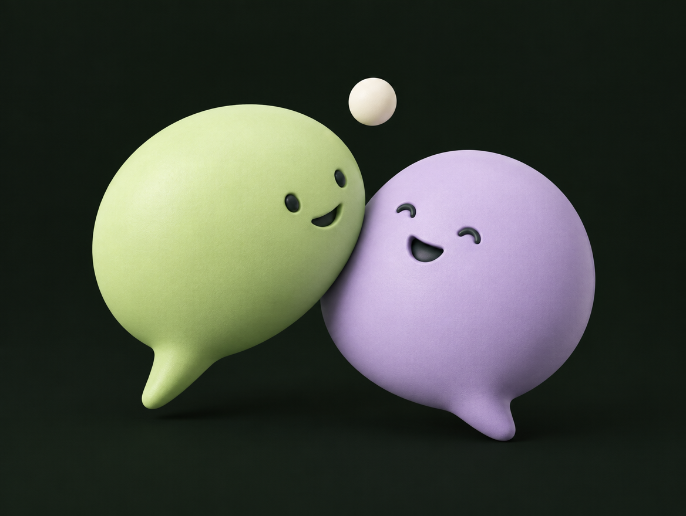

3step은 고객을 대하는 자세, 5step은 고객과 대화하는 방법입니다. 표지의 세 초록빛과 다섯 보랏빛이 두 스킬을 나타냅니다. 오늘은 좋은 태도로 시작해서 자연스러운 대화로 이어가는 법을 연습합니다. 시작 버튼이나 리모컨의 다음 버튼으로 진행하세요.
두 가지 스킬, 하나의 세일즈
태도가 만들고, 대화가 이어간다.
3step은 대화 내내. 5step은 한 호흡으로.
첫 화면에서는 3step 쪽만 조명이 켜집니다. 3step의 목적은 편안하게 대화할 수 있는 분위기를 만드는 것입니다. 시선·미소·열정을 유지하면 고객의 경계가 낮아지고 말을 걸기 쉬워집니다. 다음 버튼을 한 번 누르면 5step으로 조명이 옮겨갑니다. 5step은 고객과 대화하는 방법입니다. 문제를 이해하고 해결책에 관심을 갖고 실제 행동으로 옮기도록 흐름을 연결합니다. 다음 버튼을 다시 누르면 다음 장으로 갑니다.
3STEP / 항상 켜두는 기본값
시선. 미소. 열정.
하나씩 느끼고, 대화 내내 함께.
다음 버튼을 누를 때마다 Eye Contact → Smile → Enthusiasm 순서로 하나씩 밝아지고 조금 커집니다. 자동으로 바뀌지 않으므로 원하는 만큼 설명할 수 있습니다. Eye Contact는 누구에게 말을 거는지 분명하게 전달하고 반응을 살피는 태도입니다. Smile은 미소와 가벼운 농담으로 경계를 낮추는 태도입니다. Enthusiasm은 내 이야기에 관심과 열정을 담는 태도입니다. 큰 목소리만이 아니라 또렷한 설명, 강약, 고객의 말에 대한 반응으로도 열정을 전할 수 있습니다.
내가 지킬 무드를 먼저 정하고, 그 기분을 꺼내는 스위치를 준비합니다. 주크박스의 재생 버튼을 누르면 가호의 시작 → 럼블피쉬의 으라차차 → 미도와 파라솔의 슈퍼스타가 순서대로 이어집니다. 일시정지·정지·이전 곡·다음 곡을 직접 조작할 수 있습니다. 리모컨 다음 버튼으로도 음악 재생 → 음악을 멈추고 명대사 → 장면 재생 → 장면 정지와 스위치 ON → 다음 장 순서로 진행합니다. ‘이렇게 음악으로 자신의 무드를 만들 수도 있고, 영화나 드라마의 한 장면으로 긍정 무드를 켤 수도 있습니다.’ 대사 장면은 스물다섯 스물하나의 예시입니다. 마지막에는 나에게 힘이 되는 노래나 대사 한 가지를 떠올리게 해주세요. 영상을 벗어나면 재생은 멈춥니다.
KEEP IT A CONVERSATION
피치도 결국, 대화다.
말하고. 듣고. 이어가고.

피치도 결국 대화입니다. 이 모든 것이 대화의 연장선이라는 사실을 잊지 않습니다. 내가 말하면 고객의 반응을 듣고, 그 대답을 받아 다음 이야기를 이어갑니다. 질문을 했으면 답을 기다립니다. 외운 문장을 끝까지 말하는 것보다 상대의 말에 반응하는 것이 중요합니다. 화면 속 말풍선이 번갈아 이야기하듯이, 우리도 말하고 듣고 이어갑니다.
5STEP / 구조째로 기억하기
인사부터 재확인까지, 한 호흡으로.
01
인사 + 농담 한마디
경계를 낮추고, 대화하고 싶은 분위기를 만들기.
문장은 내 말투로. 흐름은 머릿속에.
정식 명칭은 Intro, Short Story, Presentation, Closing, Rehash입니다. 단계를 눌러 하나씩 짚어주세요. 인사와 농담으로 경계를 낮추고, 문제를 짧고 선명하게 이야기하고, 해결책을 보여주고, 지금 할 수 있는 행동을 제안한 뒤, 거래 정보를 재확인합니다. 문장을 그대로 읽는 대신 이 구조를 머릿속에 넣고 자신의 말투로 대화합니다.
01 / INTRO
첫마디는 가볍게. 농담으로 문턱을 낮추자!
ㅎㅎㅎ
첫마디를 조금 가볍게 건네봅시다. 인사와 함께 자연스러운 농담 한마디로 대화의 문턱을 낮춥니다. 중요한 것은 어떤 문장을 외우느냐보다 상대가 편안해지는가입니다. 고객이 웃거나 대답하면 그 반응을 받아주세요. 반응이 없으면 농담을 설명하지 말고 자연스럽게 다음 이야기로 넘어갑니다. 자신의 말투에 맞는 가벼운 첫인사를 한 번씩 해보게 해주세요.
02 → 03 → 04 / 피치 예시
“그래서, 어떻게 하면 돼요?”
SHORT STORY
문제는 짧게.
“깨끗한 물이 없다면 어떻게 될까요?”
문제를 꺼내고 호기심을 만들기PRESENTATION
해결은 명확하게.
“이 정화제 하나로 수십 명의 아이가 구조됩니다!”
해결책을 보여주고 구매욕구 높이기CLOSING
행동은 지금.
“너무 어렵지 않으시다면 함께 참여 가능하시죠?”
지금 할 수 있는 액션 포인트 제안하기
05 / REHASH보람과 가치를 전하고, 거래 정보를 한 번 더 확인.
제공받은 피치 예시입니다. Short Story에서 문제를 짧고 선명하게 이야기해 흥미와 호기심을 만듭니다. Presentation에서는 실제 물품과 자료를 보여주며 해결책이 눈앞에 그려지게 설명합니다. 정화제의 효과와 수혜 규모는 실제 사용하는 캠페인 자료에 맞춰 설명합니다. Closing은 ‘너무 어렵지 않으시다면 함께 참여 가능하시죠?’처럼 지금 행동할 수 있는 분명한 제안을 합니다. TAAIS는 Trial, Assumptive, Alternative, Indifference, Silence입니다. 질문한 다음에는 고객의 선택을 기다립니다. Rehash에서는 참여의 보람과 가치를 전하고 금액·주기·안내 사항을 다시 확인합니다.
일상에서도 5STEP으로
“우리 오늘, 저녁 먹을까?”
친구랑 약속 잡을 때도 이미 쓰고 있는 대화의 흐름.
Intro
“퇴근했어? 오늘 고생했네 ㅎㅎ”
Short Story
“배고프지? 나 점심도 대충 먹었어.”
Presentation
“회사 앞 고깃집 맛있다던데, 거기 갈까?”
Closing
“좋으면 내가 지금 두 자리 예약할게.”
Rehash
“그럼 7시, 회사 앞 고깃집에서 보자!”
상대의 대답을 듣고, 자연스럽게 이어가기.
친구와 저녁 약속을 잡는 상황입니다. 퇴근 인사를 하고, 배고프다는 공통의 문제를 꺼내고, 갈 만한 식당을 제안하고, 예약이라는 행동으로 이어간 뒤 시간과 장소를 확인합니다. 상대가 동의하며 이어지는 대화의 예시이고, 다른 답을 하면 그 이유를 듣고 제안을 바꿉니다. 일상에서도 이렇게 구조를 써보면 현장에서도 자연스럽게 나옵니다. 짝과 함께 실제로 주고받는 말투로 연습해보세요.
문장보다, 그 문장의 목적
HOW보다WHY.
5step의 행동과 목적
단계
무엇을 하나
왜 하나
01Intro
인사 · 아이스브레이킹
경계를 낮추고 호기심을 올리기
02Short Story
문제 제기
흥미 유발 · 관심도 진단퀄리파잉
03Presentation
해결책 제시
구매욕구를 최대치까지 올리기
04Closing
지금 할 수 있는 행동 제안
강력한 액션 포인트 만들기
05Rehash
보람·가치 전달 거래정보 재확인
취소율 낮추기
왜 하는지 알면, 어떤 말을 할지는 달라져도 괜찮다.
마지막으로 HOW보다 WHY에 집중합니다. 인트로는 경계를 낮추고 호기심을 올리기 위해 합니다. 숏스토리는 문제 제기로 흥미를 유발하고, 아직 관심 없는 고객의 관심도를 살펴 퀄리파잉·진단하기 위해 합니다. 프레젠테이션은 해결책을 제시해 구매욕구를 최대치까지 올리는 단계입니다. 클로징은 지금 행동할 수 있는 강력한 액션 포인트를 제안하는 단계입니다. 리해쉬는 보람과 가치를 전하고 거래 정보를 재확인해 취소율을 낮추는 데 목적이 있습니다. 표에 적힌 목적을 이해하면 외운 문장이 생각나지 않아도 자신의 말로 대화를 이어갈 수 있습니다. 거절을 들어도 마지막 인사까지 좋은 무드를 지키고, 다음 고객에게 새롭게 인사합니다.